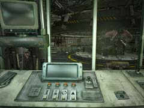
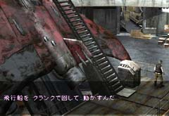

| 概要 | 地図 | |
| 淡いヒント集 | ヒント集 | 的確なヒント集 |
| 攻略最短ルート | Syberia 攻略へ |
|
大佐の願い
アラルバッドへ行く方法は分かった。しかし、行くための装置が動かない。そんな状況を解決する方法を大佐は知っているという。ただし、それを教えるには条件がある。あなたは、大佐のかねてからの願いである”宇宙船の発射させる”ということをしなくてはならなくなった。 以下の手順で宇宙船を発射させればよいだろう。 ・発射装置の電源を確保する ・宇宙船へ乗る人物の血液検査をパスする ・宇宙船の発射ボタンを押す ・アラルバッドへ行く装置を動かす ・アラルバッドへ行く

・これがロケット発射の制御装置である。 ・電源の確保はどうすればよいか? ・左側にある十時の溝は、ゼンマイを巻く鍵穴である。 ・右上にあるスイッチは、一般家電のオン・オフのマークである。 ・しかし、それだけでは電源は確保できない。まだ、足りないものがある。 ・次は血液検査である。 ・血液検査はどのように行われているか? 装置の周りをよく調べて欲しい。 ・大佐のアルコールたっぷりの血液は、宇宙旅行に適しているか。答えは否である。 ・どうすれば血液検査をパスできるか? 正常な血液さえあればよいのだ。

・発射ボタンを押すと、大佐が飛行船の動かし方を教えてくれる。 ・クランクをどうすれば動くのだろうか? ・クランクを探して、これが必要な装置を探せばよい。 |
| 概要 | 地図 | |
| 淡いヒント集 | ヒント集 | 的確なヒント集 |
| 攻略最短ルート | Syberia 攻略へ |